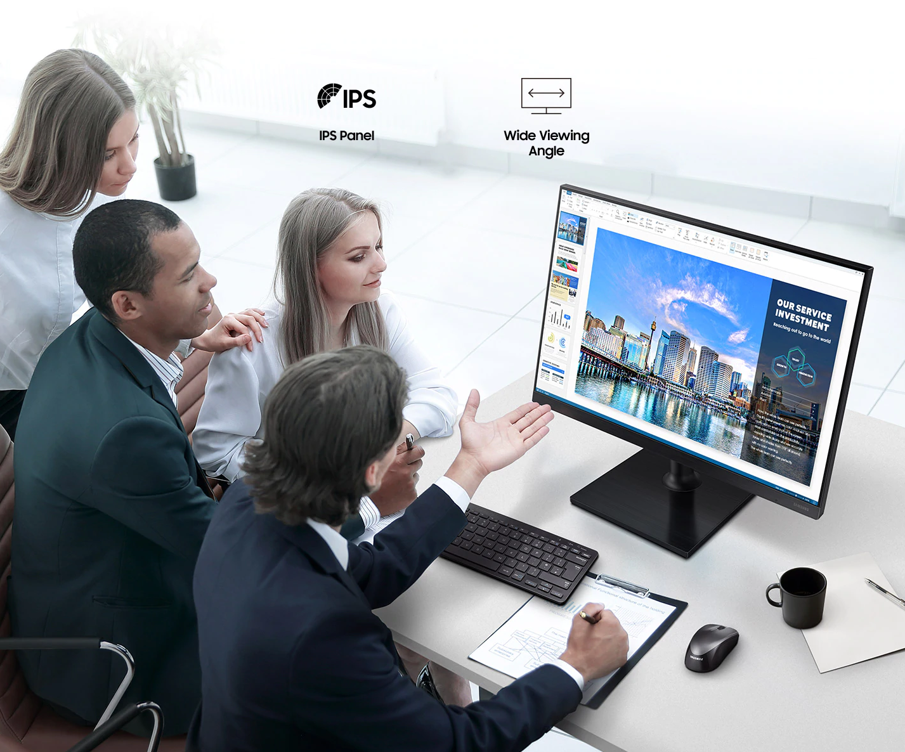

Отличная видимость со всех сторон
Монитор, в котором цвета идеально видно со всех сторон. Неважно, под каким углом вы смотрите на панель — матрица IPS передаст детализацию и чистоту оттенков на всей площади дисплея. Угол обзора в 178 градусов позволяет эффективно использовать монитор, сохраняя неизменную точность цвета на каждом участке.
